Regra de três composta, na matemática, é a forma de encontrar um valor desconhecido quando conhecemos três ou mais grandezas diretamente ou inversamente proporcionais.
Exemplos resolvidos de regra de três composta:
1) Numa gráfica existem 3 impressoras off set que funcionam ininterruptamente, 10 horas por dia, durante 4 dias, imprimindo 240.000 folhas. Tendo-se quebrado umas das impressoras e necessitando-se imprimir, em 6 dias, 480.000 folhas, quantas horas por dia deverão funcionar ininterruptamente as duas máquinas restantes?
| a) 20 | b) 18 | c) 15 | d) 10 | e) 8 |
|---|
Solução: monte a tabela e agrupe as grandezas de mesma espécie na mesma coluna.
| Impressoras | Horas/Dia | Dias | Folhas |
|---|---|---|---|
| 3 | 10 | 4 | 240.000 |
| 2 | X | 6 | 480.000 |
Perceba que se trata de um problema que envolve regra de três composta, pois temos mais de três grandezas conhecidas. Vamos resolver esse problema de regra de três composta, analisando cada grandeza relativamente à grandeza onde está o X. Assim, para resolver regra de três composta você deve reduzir o problema em várias regra de três simples. Se você não sabe com resolver regra de três simples, acesse a seção aqui no site.
Analisemos, inicialmente, a grandeza impressoras com horas/dia que é onde se encontra a incógnita, isto é, o X.
Inicialmente, coloquemos uma seta orientada no sentido contrário do X, isto é, para cima. Vamos analisar a outra parte.
Inversa: se diminuímos o número de impressoras, precisamos aumentar a carga horária de trabalho. Assim, coloquemos uma seta contrária, isto é, para baixo.
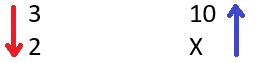
Agora vamos analisar a grandeza dias com horas/dia, onde está o X.
Inversa: se aumentamos o número de dias de trabalho, podemos diminuir a carga horária de trabalho. Assim, também coloquemos uma seta contrária, isto é, para baixo.
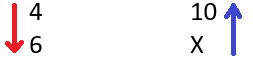
Por último, vamos analisar a grandeza folhas com horas/dia, onde está o X.
Direta: se aumentamos a quantidade de trabalho a ser feito, precisamos aumentar a carga horária de trabalho. Então, neste caso, coloquemos uma seta na mesma direção do X, isto é, para cima.
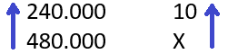
Juntando tudo, temos:
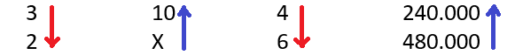
Então, sempre respeitando o sentido das setas, ou seja, quando for inversa (seta vermelha) invertemos os valores (denominador, parte de baixo, vai para o numerador, parte de cima) e quando for direta deixa como está. Esse processo foi ensinado em regra de três simples, vale também para regra de três composta.
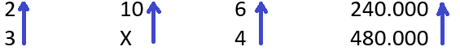
Agora, para resolver, vamos isolar a grandeza que possui a incógnita, isto é, o X, para formarmos a equação. Veja:
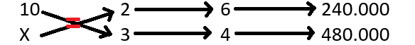
Como pode ver, o que está antes da igualdade multiplicamos em cruz, isto é, em X; o que está depois da igualdade multiplicamos em linha. Assim, temos a seguinte equação:
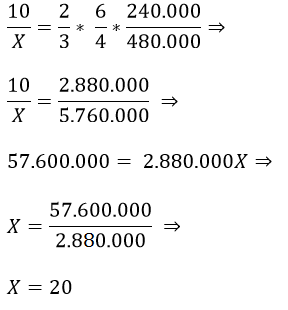
Logo, as máquinas restantes devem funcionar 20 horas/dia para produzir 480.000 folhas em 6 dias.
Resposta: A
Exemplo:
2) 24 operários fazem 2⁄5 (dois quinto) de determinado serviço em 10 dias, trabalhando 7 horas por dia. Em quantos dias a obra estará terminada, sabendo-se que foram dispensados 4 operários e o regime de trabalho diminuído de uma hora por dia?
| a) 8 | b) 11 | c) 12 | d) 21 | e) 18 |
|---|
24 operários …. 2⁄5 trabalho …. 10 dias …. 7 horas/dia
Como já foram feitos 2⁄5 do trabalho, ou seja, 2 partes de uma tarefa dividida em 5 partes, restam concluir 3 dessas partes.
Solução: montando a tabela e agrupando as grandezas de mesma espécie na mesma coluna.
| Operários | Partes do Trabalho | Dias | Horas/Dia |
|---|---|---|---|
| 24 | 2 | 10 | 7 |
| 20 | 3 | X | 6 |
Coloquemos inicialmente uma seta contrário ao X, isto é, para cima.
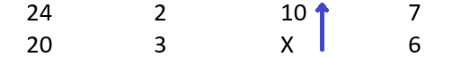
Analisando cada grandeza em relação ao X.
Vamos analisar a grandeza operários em relação ao X.
Inversa: diminuindo o número de operários a quantidade de dias aumenta.
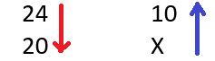
Agora, vamos ver como se comporta as partes do trabalho em relação ao X.
Direta: aumentando o trabalho a quantidade de dias aumenta.
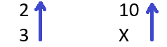
Vejamos agora, a jornada diária (horas/dia) em relação ao X.
inversa: diminuindo a jornada diária a quantidade de dias aumenta.
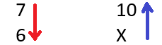
Juntando tudo, temos:
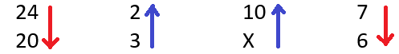
Respeitando o sentido das setas e invertendo as grandezas inversamente proporcionais, ou seja, as setas para baixo (vermelha). O objetivo é transformar as grandezas em diretamente proporcionais. Como ficou diretamente proporcional, colocamos as setas tudo numa só direção (seta azul, para cima, diretamente proporcional). Fica assim:
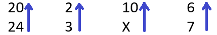
Isolando a incógnita, isto é, a grandeza onde tem o X. Relembrando, o que está antes da igualdade multiplicamos em cruz, isto é, em X; o que está depois da igualdade multiplicamos em linha. Seguindo o sentido das setas.
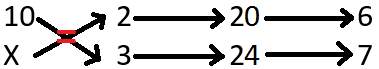
Resolvendo a equação:
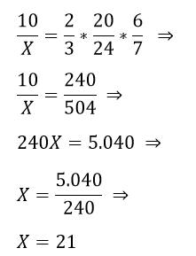
Logo, a obra será terminada em 21 dias com 20 operários trabalhando 6 horas/dia.
Resposta: D
O intuito é facilitar o entendimento sobre regra de três composta, que parece ser mais difícil que a regra de três simples, mas, quando explicado os passos, fica fácil. Se gostou, curte aí ! 😉
Bons estudos e boa sorte!
Estude também…